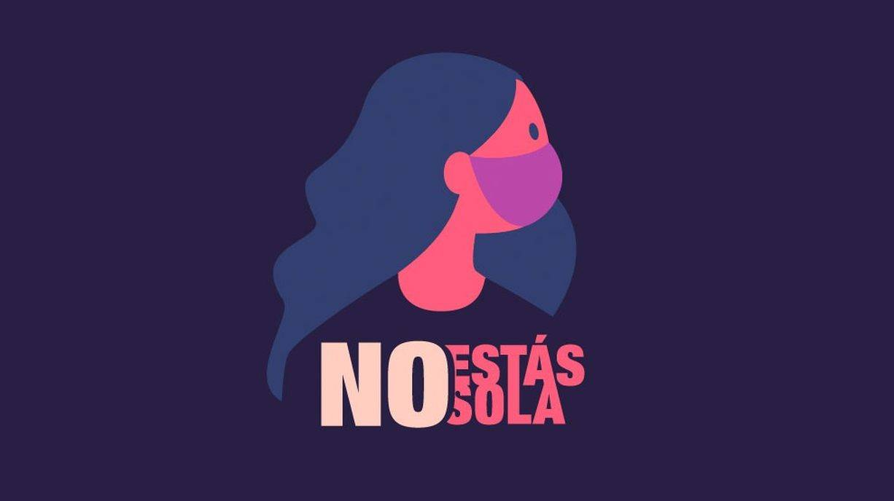

Las Naciones Unidas definen la violencia contra la mujer como «todo acto de violencia de género que resulte, o pueda tener como resultado un daño físico, sexual o psicológico para la mujer, inclusive las amenazas de tales actos, la coacción o la privación arbitraria de libertad, tanto si se producen en la vida pública como en la privada
La violencia de pareja se refiere al comportamiento de la pareja o ex pareja que causa daño físico, sexual o psicológico, incluidas la agresión física, la coacción sexual, el maltrato psicológico y las conductas de control.
La violencia sexual es cualquier acto sexual, la tentativa de consumar un acto sexual u otro acto dirigido contra la sexualidad de una persona mediante coacción por otra persona, independientemente de su relación con la víctima, en cualquier ámbito.
La la violecia a la muejer afecta a todas..
Conoce mas sobre este tema!Que suceda violecia hacia la mujer desde años pasados, cilos y mas, nos afecta a todas. Hay que buscar cambio, solucines y ayudar a la mujer que lo necesite, nos afecta a una y todas, se lucha por las que no estan, por las que estan y las que vienen en camino
Chicas y por ultimo recuerden, no estan solas, si necesitan ayuda, por lagun tipo de violecia por parte de su pareja, padre, hermano o cualquier persona no se queden calladas, hablen, y denuncien